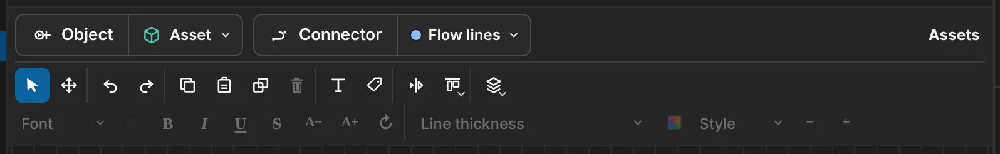
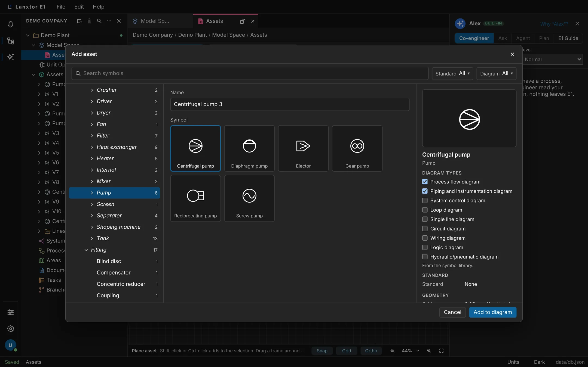
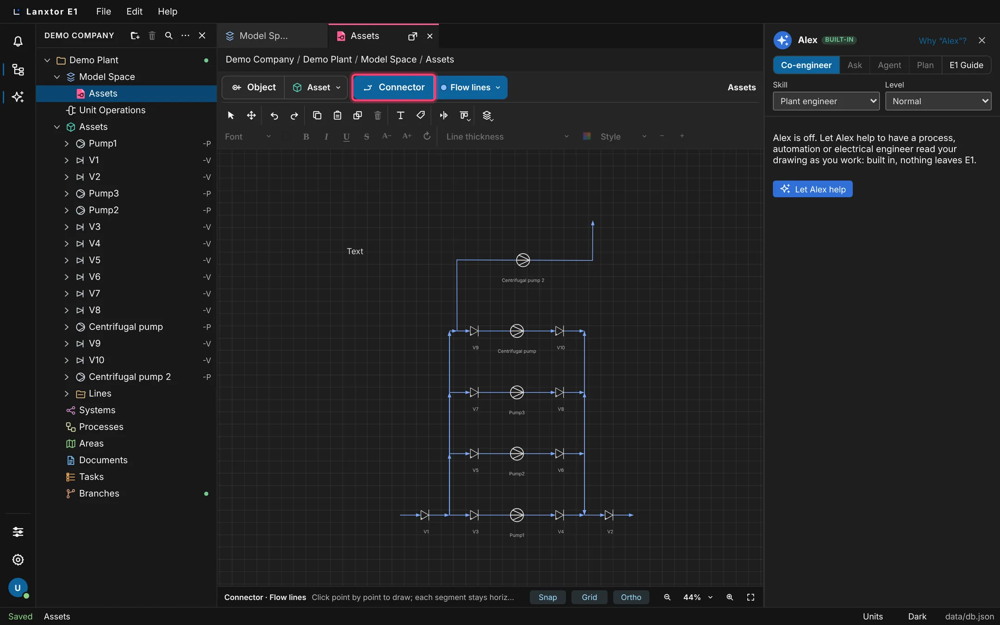
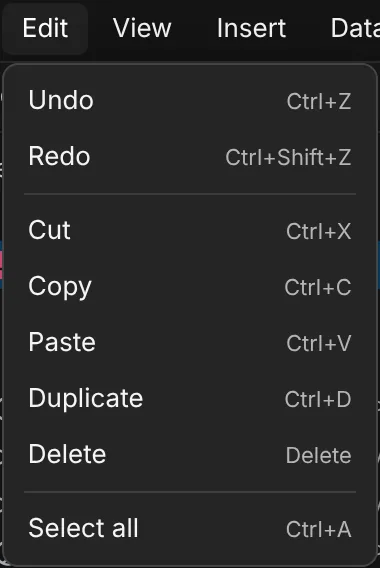
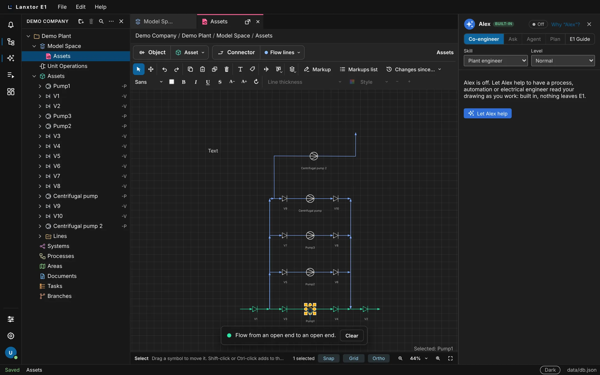
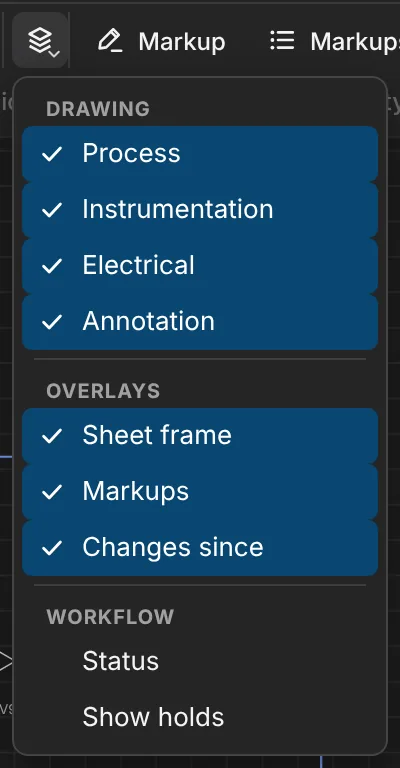
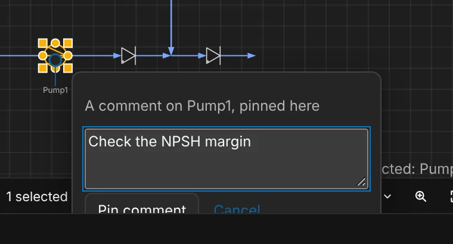
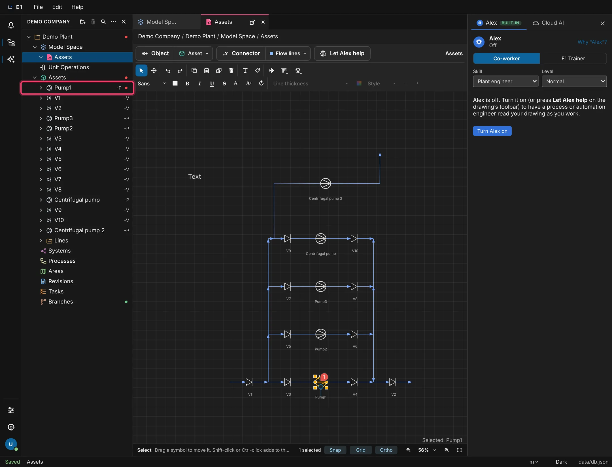
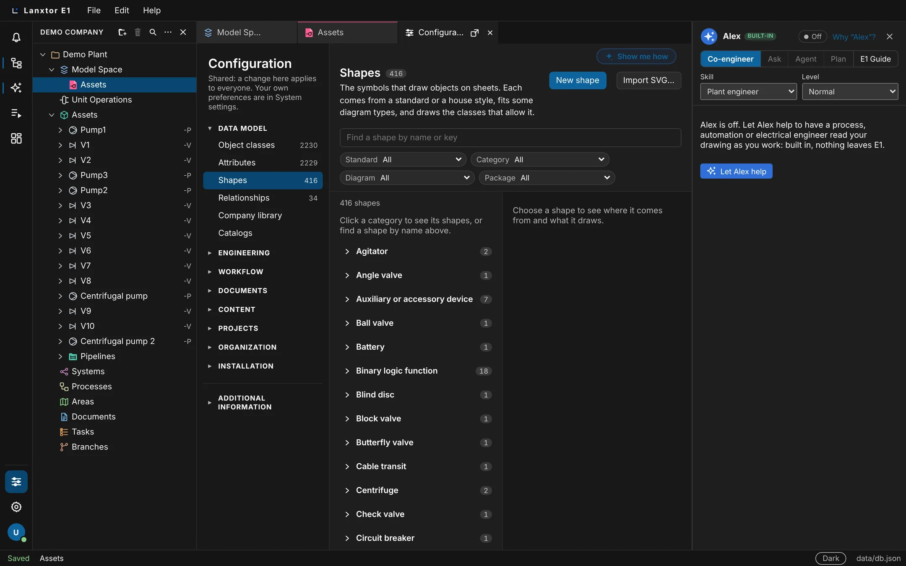
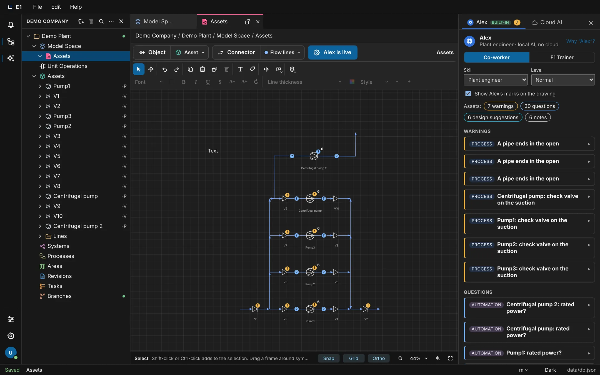

Academy / User guide / Drawing P&IDs
5. Drawing P&IDs
The sheet view: place symbols, draw pipes, signals and cables, select, move, format, layers, flow, off-page connectors and loop diagrams.
About this guide
This guide covers the sheet view, where you draw P&IDs. Every symbol on a sheet is an object of the project, and every line you draw is a pipe, cable, wire or signal in the model, so the drawing, the explorer and the lists always show the same plant.
The typical workflow
- Open a sheet and find your way around it: the sheet view, the drawing toolbar and Snap, Grid and Ortho.
- Place equipment: place a symbol, or drop an object from the explorer. Other kinds of objects come from the Object button.
- Connect it: draw pipes, signals and cables with Connector, following the connection rules.
- Arrange it: select, move, flip, resize and align, copy and paste, delete.
- Annotate it: tags and line numbers, text notes, line styles, flow arrows and crossings.
- Organize and check it: layers, system and area frames, off-page connectors, Highlight flow, comments pinned on the sheet.
- Let E1 help: predictive mode, engineering patterns and generated loop diagrams.
Printing a sheet and its PDF are described in the documents guide. The end of this page lists what is planned for drawing: the symbol designer, piping (pipelines, pipe classes, the line list, DEXPI), CAD import and redlining.
Before you start
- You are signed in and have a project open (create a project).
- To change a drawing you need an Editor license and a project role that may edit drawings. With read access you can open, zoom, pan, select and highlight, but not change anything.
- The examples use the demo project: the sheet Assets with the pumps Pump1 to Pump3 and the valves V1 to V10. On your own project, use your own names.
Open a sheet, zoom and pan
A sheet opens in its own tab as a 2D drawing. You zoom with the mouse wheel or the zoom controls, and pan with a drag, the Pan tool or the Space bar. Symbols and text stay sharp at every zoom.
- Where
- Double-click a sheet in the explorer, or click its tab. Zoom: the zoom controls at the right end of the status bar under the sheet, the mouse wheel and the keys.
- Who
- Anyone who can open the project
- Before you start
- The project has a sheet, for example Assets.
Steps
| # | Action | Expected result |
|---|---|---|
| 1 | Double-click the sheet Assets in the explorer. | The sheet opens in a tab. The drawing toolbar is above it, and the status bar below it shows Select, the toggles Snap, Grid, Ortho and the zoom controls. |
| 2 | Point at a symbol and turn the mouse wheel. | The view zooms in or out. The point under the pointer stays where it is. |
| 3 | Click Fit drawing in the status bar (or press Ctrl+0 (⌘0)). | The whole drawing is shown. |
| 4 | Click the zoom percentage in the status bar (Zoom) and choose 200%. | The menu offers Zoom in, Zoom out, 50%, 75%, 100%, 150%, 200%, 400%, Fit drawing and Zoom to selection. After the choice the button reads 200%. |
| 5 | Click Zoom in or Zoom out in the status bar, or press Ctrl++ (⌘+) or Ctrl+− (⌘−). | The zoom steps up by a quarter or down by a fifth. At the closest or farthest zoom the button is greyed out. |
| 6 | Select a symbol, then click the zoom percentage and choose Zoom to selection. | The view zooms to the selected symbol. |
| 7 | Drag with the middle mouse button, or with the right button held down. | The drawing pans, whatever tool is active. A right-click without moving opens a menu instead. |
| 8 | Hold Shift and turn the mouse wheel. | The drawing pans sideways. |
| 9 | Click Pan on the toolbar (or press H), then drag with the left button. | The status bar reads Pan, and a left-drag pans. Press V or click Select to go back to selecting. |
| 10 | With Select active, hold Space and drag. | The drawing pans while Space is held. |
The space name at the right end of the toolbar's first row (for example Assets) names the space this sheet draws.
The drawing toolbar and the formatting bar
The toolbar above the sheet has three rows: what to add, the editing tools, and the formatting of text and lines. Every button shows its name when you point at it.
- Where
- Above an open sheet
- Who
- Everyone sees it; the editing buttons need edit rights on the drawing
- Before you start
- A sheet is open.

What is on it
| Row | Control | What it does |
|---|---|---|
| 1 | Object with Object type (shows Asset) | Adds an object of the chosen type; Asset opens the Add asset window. See Place a symbol and Object types. |
| 1 | Connector with Connector type (shows Flow lines) | Draws lines of the chosen kind. See Connector. |
| 1 | Let Alex help / Alex is live | Turns predictive mode on and off. See Predictive mode. |
| 2 | Select (V), Pan (H) | The pointer tools. |
| 2 | Undo, Redo, Copy, Paste, Duplicate, Delete | Editing. Delete is greyed out with nothing selected. See Copy, paste and undo. |
| 2 | Text, Tag | Place a text note; tag a symbol. See Text notes and Tags on the sheet. |
| 2 | Frame tools (only while a system or area is picked) | Draw a rectangle, circle or freehand frame. See Frames. |
| 2 | Flip, Align ▾, Layers ▾ | See Move, flip, resize, align and Layers. |
| 3 | Text format: Font, Text color, Bold, Italic, Underline, Strikethrough, Smaller, Larger, Rotate | Greyed out until a note or a symbol name is selected. See Text notes. |
| 3 | Line style: Line thickness, Line color, Style, Thinner, Thicker | Greyed out until a line is selected. See Line style. |
Steps
| # | Action | Expected result |
|---|---|---|
| 1 | Open a sheet and point at each button of the second row. | Each shows its name: Select, Pan, Undo, Redo, Copy, Paste, Duplicate, Delete, Text, Tag, Flip, Align, Layers. |
| 2 | With nothing selected, look at the third row. | All format controls are greyed out; Font, Line thickness and Style show their names. |
| 3 | Select a pipe. | The line style controls become active; the text format controls stay greyed out. The toolbar keeps its height. |
Snap, Grid and Ortho
Three drawing aids help you draw clean P&IDs: a grid, snapping of line ends onto nozzles, and lines that stay horizontal or vertical. They are your own settings and stay as you left them after a reload.
- Where
- The toggles Snap, Grid and Ortho in the status bar under the sheet
- Who
- Everyone; the setting is per person
- Before you start
- A sheet is open.
- Grid shows a grid of 0.5 m (2.5 m when you zoom far out).
- Snap: a line end you move within 16 pixels of a free nozzle or point joins it.
- Ortho: each connector segment stays horizontal or vertical. With Ortho off, lines run straight at any angle.
Steps
| # | Action | Expected result |
|---|---|---|
| 1 | Click Grid in the status bar. | The grid disappears and the Grid toggle is off. |
| 2 | Reload the page. | Grid is still off. |
| 3 | Click Ortho in the status bar to turn it off, then draw a line with Connector by clicking two points at an angle. | The line runs straight at an angle. The status hint says you can draw "at any angle". |
| 4 | Turn Ortho and Grid back on. | New segments stay horizontal or vertical; the grid is shown again. |
Place a symbol
You place equipment, valves and instruments from the Add asset window. Each symbol you place is a new object in the project with its next free name or tag. Two clicks set its inlet and outlet, so you choose its direction and size as you place it.
- Where
- Drawing toolbar → Object while Object type shows Asset, or Object type → Asset
- Who
- Editor license and a project role that may edit drawings
- Before you start
- A sheet is open.
The Add asset window
- Search symbols finds symbols by name, type, standard, key, class or diagram type.
- The filter menus Standard and Diagram have check boxes with counts and a Show all button. Clear filters resets them. On a sheet with a diagram type, the Diagram filter starts on that type.
- On the left, All with a count and the class tree.
- The Name field is filled with the next free name.
- The symbol grid, grouped by kind; on All, a Recent group comes first.
- The details of the chosen symbol, with Diagram types check boxes. Ticking one sets that diagram type for the shape across the project. With nothing chosen it says "Select a symbol to see its details."
- Cancel and Add to diagram. A double-click on a symbol adds it at once; the arrow keys move the choice.
Steps
| # | Action | Expected result |
|---|---|---|
| 1 | Click Object on the toolbar (its type shows Asset). | The Add asset window opens. Esc would close it. |
| 2 | Type "centrifugal" in Search symbols. | The grid shows only the matching symbols. A search with no match shows "No symbols match "…"." |
| 3 | Click Centrifugal pump, type the name P-NEW in Name, then click Add to diagram. | The window closes. The status bar reads Place asset with the hint "Click to set the inlet, then the outlet. Placing repeats for the next one; right-click or Esc stops. F flips the symbol." |
| 4 | Click once on free sheet. | The inlet is set, and a ghost of the pump follows the pointer. A first or second click near the end point of a pipe or a nozzle takes that point, so the symbol connects there. |
| 5 | Move the pointer straight down and click. | A vertical pump P-NEW is placed. A short second click keeps the default size; a longer one sets the size, within limits. |
| 6 | Click elsewhere, press F, then click a second time. | A second pump is placed, facing the other way, with the next free name. |
| 7 | Click once on free sheet, then press Esc. | The first click is taken back; the tool still places. |
| 8 | Press Esc again (or right-click). | Placing stops; no menu opens. The status bar reads Select. With no first click, one Esc stops placing. |
| 9 | Open the window again, choose Gate valve, click Add to diagram, then click once on the middle of an existing pipe. | The valve sits in the line along it, and the pipe is split there. |
| 10 | Look at the explorer under Assets. | The new pumps and the valve are there as objects. Pumps whose class has a tag rule get tags such as P-001, P-002. |

Manual-review check B2 still says "Place symbols from Insert → Asset"; E1 has no Insert menu any more, so follow it with the toolbar's Object button instead.
The tags come from your project's tag rules (Tag rules). To place an object that already exists, drag it from the explorer (Drop from the explorer).
Add other objects with the Object button
The Object button adds more than assets. Its type menu also makes unit operations, systems, processes and areas while you draw, and the button remembers the type you used last.
- Where
- Drawing toolbar → Object type (the right part of the Object button)
- Who
- Editor license and a project role that may edit drawings
- Before you start
- A sheet is open.
Steps
| # | Action | Expected result |
|---|---|---|
| 1 | Click Object type. | A menu with Unit operation, Asset, System, Process and Area; Asset is checked the first time. |
| 2 | Click Area. | The dialog "New object in Areas" opens. |
| 3 | In the classes, click Area, type the name "Area North", then click Create. | You are back on the sheet. The frame tools for area Area North appear on the toolbar, and the button now reads Area. |
| 4 | Reload the page and look at the Object button. | It still shows the last type you chose (the choice is kept in this browser). |
The dialog is the same one the explorer opens for a new object (Create an object). Drawing a frame for the new area is described in Frames.
Draw pipes, signals and cables with Connector
Connector draws the lines between symbols: flow lines (pipes), cables, wires and logic signals. Every line is an object in the model and connects the symbols it touches, so the connection shows in lists and in Highlight flow.
- Where
- Drawing toolbar → Connector; the kind in Connector type.
- Who
- Editor license and a project role that may edit drawings
- Before you start
- A sheet with at least two symbols is open.
Steps
| # | Action | Expected result |
|---|---|---|
| 1 | Click Connector type. | A menu with Flow lines, Cable, Wire and Logic, each with its colour swatch. |
| 2 | Choose Flow lines, then click Connector. | The button is highlighted. The status bar reads Connector · Flow lines with the hint "Click point by point to draw; each segment stays horizontal or vertical. Clicking a nozzle or a line connects and ends the run; Esc or a double-click ends it too, and right-click leaves the Connector." |
| 3 | Drag from the outlet of one pump to the inlet of a valve. | One routed pipe is drawn, and the two symbols are connected. The pipe shows its flow arrow. |
| 4 | Click on free sheet, then click a few more points. | Each click adds a segment from where the last one ended. The line being drawn looks like its kind. |
| 5 | Click on a nozzle, a symbol or another line. | The run connects there and ends. Ending on a pipe makes a junction that splits it; ending within 8 pixels of a symbol attaches to it. |
| 6 | Start another run, then press Esc or double-click. | The run ends, and Connector stays on. |
| 7 | Right-click on the sheet. | You leave Connector: the status bar reads Select, and no menu opens. |
| 8 | Choose Logic in Connector type and draw a line between two instruments. | Connector starts with Logic; the line is dashed while you draw it. Cable, Wire and Logic lines have no flow arrows. |
| 9 | Choose Cable and end a cable on a pump body. | A port is made on the pump's outline, and the cable ends there. |

With Ortho off, segments run at any angle (Snap, Grid and Ortho). Each drawn pipe run is an object under Assets → Lines.
Connection rules: one pipe per nozzle, lines that follow and heal
E1 keeps the drawing a correct model. A nozzle takes one pipe end, connected lines follow when you move a symbol, and deleting a symbol that sits in a line joins the line again.
- Where
- On any sheet, while you draw, move and delete
- Who
- Editor license and a project role that may edit drawings
- Before you start
- A sheet with a pump, a valve and a pipe between them.
Steps
| # | Action | Expected result |
|---|---|---|
| 1 | Drag the pump to a new place. | The pipe follows and stays connected, its segments horizontal or vertical. |
| 2 | With Connector on Flow lines, draw a second pipe to the nozzle that already has the first pipe. | It is refused with a message of the form "The nozzle … already ends …; … cannot end there too", and nothing is drawn. |
| 3 | Draw a Wire or Logic line to that same nozzle. | It is allowed: signals may still end there. |
| 4 | Place a valve into the middle of a pipe, then select the valve and delete it (Delete the object). | The pipe is continuous again across the gap. A branch that ended on the valve goes with it. |
Select symbols, lines and notes
With the Select tool you pick one item with a click, add or remove items with Shift or Ctrl, take a region with a frame, or a whole pipe run with a double-click. The status bar shows how many items are selected.
- Where
- Drawing toolbar → Select (V)
- Who
- Everyone who can open the sheet
- Before you start
- A sheet with symbols and lines is open.
Steps
| # | Action | Expected result |
|---|---|---|
| 1 | Click Pump1. | Pump1 shows its grips. The status bar reads "1 selected", and the bottom right of the sheet reads "Selected: Pump1". The hint says "Drag a symbol to move it. Shift-click or Ctrl-click adds to the selection. A frame selects a pipe only when the whole segment is inside it." |
| 2 | Shift-click (or Ctrl-click (⌘-click)) a valve. | "2 selected"; the sheet reads "Selected: 2 items". Shift-clicking it again takes it away. |
| 3 | Click close to a pipe, not exactly on it. | The pipe is selected ("Selected: Line"); lines are picked near them. |
| 4 | Double-click a pipe. | Its whole run between two symbols is selected. Shift and double-click adds another run. |
| 5 | Drag a frame across part of the drawing on empty sheet. | Symbols whose center is inside are selected; a pipe segment only when it lies fully inside. |
| 6 | Click the sheet, then press Ctrl+A (⌘A). | Everything on the sheet is selected. |
| 7 | Press Esc. | The selection is cleared. |
Ctrl+A (⌘A) acts on the sheet only when the sheet was the last pane you clicked; after a click in the explorer it does not. Ctrl+A, Select all and Esc select and clear only for people who may edit the drawing.
Move, flip, resize and align
Drag the selection to move it; connected lines follow and stay square. Flip a symbol, resize it with its grips, or line several symbols up with the Align menu.
- Where
- Drawing toolbar → Flip and Align ▾; right-click a symbol → Flip horizontal / Flip vertical
- Who
- Editor license and a project role that may edit drawings
- Before you start
- A sheet with several connected symbols is open.
Steps
| # | Action | Expected result |
|---|---|---|
| 1 | Select a pump and drag it. | It moves; its pipes follow and stay horizontal or vertical. |
| 2 | Press F (or click Flip). | The pump is mirrored. Doing it again turns it back. |
| 3 | Right-click the pump → Flip vertical. | The pump is mirrored top to bottom. |
| 4 | With one symbol selected, drag the grip on its right side (Resize e). | The symbol grows along its flow direction. The top and bottom grips (Resize n, Resize s) scale across it; the corner grips scale both ways. Its line width stays the same. |
| 5 | Select two or more symbols, click Align ▾ and choose Align top. | The menu offers Align left, Align center, Align right, Align top, Align middle, Align bottom, Distribute horizontally, Distribute vertically and Same size. The symbols line up at the top; connected pipes stay horizontal or vertical. |
| 6 | Select three symbols and choose Align ▾ → Distribute horizontally. | They are spaced evenly. Distribute needs three or more items. |
| 7 | Select two symbols and choose Same size. | The second takes the size of the first one selected. |
With lines selected, F flips their flow direction instead (Flow arrows).
Undo, redo, copy, paste and duplicate
Copy, paste and duplicate make new objects with new tags; cut removes them to the Deleted bin. Undo and redo work step by step across the drawing, the explorer and attributes, one history per person per project.
- Where
- Drawing toolbar (Undo, Redo, Copy, Paste, Duplicate), the Edit menu, and the right-click menus
- Who
- Editor license and a project role that may edit drawings
- Before you start
- A sheet with symbols is open.
Steps
| # | Action | Expected result |
|---|---|---|
| 1 | Move a symbol, then press Ctrl+Z (⌘Z). | The move is undone. |
| 2 | Press Ctrl+Shift+Z (⇧⌘Z) or Ctrl+Y. | The move is done again. |
| 3 | Select a pump and press Ctrl+C (⌘C), then Ctrl+V (⌘V). | A copy of the pump appears. It is a new object with a new tag, shown in the explorer. |
| 4 | Select a valve and press Ctrl+D (⌘D) or click Duplicate. | A duplicate with a new name appears beside it. |
| 5 | Select the copy and press Ctrl+X (⌘X). | It leaves the sheet and goes to the Deleted bin. |
| 6 | Press Ctrl+Z (⌘Z) three times. | The last three steps are undone one by one. |

Ctrl+C, Ctrl+X, Ctrl+V, Ctrl+D and Ctrl+A (⌘ on a Mac) act on the sheet only when the sheet was the last pane you clicked. After a click in the explorer, click the sheet first. Paste in the right-click menu is greyed out until you have copied something. To undo a change of someone else's, or an older change, use History (History and undo).
Delete on the drawing: the placement or the object
Deleting one symbol asks whether to remove it only from this drawing, keeping the object in the project, or to delete the object. Deleted objects go to the Deleted bin, from where they can be restored.
- Where
- Delete or Backspace, the toolbar Delete, or right-click → Delete
- Who
- Editor license and a project role that may edit drawings
- Before you start
- A sheet with symbols, lines and a note is open.
Steps
| # | Action | Expected result |
|---|---|---|
| 1 | Select V3 and click Delete on the toolbar. | The dialog "Delete V3" asks: "Remove only this placement, and keep the object in the project (under Assets), or delete the object? A deleted object goes to the Deleted bin, from where it can be restored." with Cancel, Remove from this drawing and Delete the object. |
| 2 | Click Remove from this drawing. | V3 leaves the sheet but stays under Assets in the explorer; its shortcut row for the drawing goes. |
| 3 | Select two symbols and press Delete. | Both go to the Deleted bin without a question. |
| 4 | Select a line or a note and press Delete. | It is deleted at once. |
Manual-review check C7 expects a preview of what goes with the object on the first Delete. Delete moves an object to the Bin; the preview of what goes with it is shown only at Delete permanently… in the Bin.
Tags, names and line numbers on the sheet
Every symbol shows its tag or name, and every tagged or named pipe run shows its line number along it. You can drag and rotate the labels, and tag a symbol by hand with the Tag tool. Renames by other people appear on the open drawing.
- Where
- On the sheet; drawing toolbar → Tag
- Who
- Everyone sees labels; moving them and tagging need edit rights
- Before you start
- A sheet with tagged symbols and pipes is open.
Steps
| # | Action | Expected result |
|---|---|---|
| 1 | Place two new centrifugal pumps. | Each shows its tag, for example P-001 and P-002, if your project has a tag rule for pumps. |
| 2 | Look along a tagged pipe run. | Its line number (for example L-101) is drawn along it. |
| 3 | Press on a pump's name label and drag it away from the pump. | The label moves with the pointer and stays where you dropped it, also after a reload. The pump need not be selected first. |
| 4 | Click the pump to select it, then drag the round handle above its name (Rotate the name). | The handle appears above the name only while the symbol is selected. The label turns in steps of 15°. |
| 5 | Select one pump, then click Tag on the toolbar. | The tag dialog opens with the pump's tag, its state, and a field for a manual tag, with Cancel and Set tag (and Use the rule's tag when the rule gives a different tag). |
| 6 | Close the dialog, click Tag with nothing selected, then click a symbol. | The tag dialog opens for that symbol. |
Labels are formatted with the text format row (Text notes) and hidden with the Annotation layer (Layers). How tags are made is described in Tags and Tag rules.
Text notes and text formatting
Text notes put free text on the sheet. Notes and symbol names are formatted with the text format row: font, colour, bold, italic, underline, strikethrough, size and rotation.
- Where
- Drawing toolbar → Text; the text format group in the third toolbar row
- Who
- Editor license and a project role that may edit drawings
- Before you start
- A sheet is open.
Steps
| # | Action | Expected result |
|---|---|---|
| 1 | Click Text. | The status bar reads Text with the hint "Click the sheet to place text. Double-click a note to edit it." |
| 2 | Click the sheet. | A note "Text" is placed with its text selected. |
| 3 | Type "Feed from tank farm" and press Enter (or click away). | The text is kept. Esc instead keeps the old text; emptying a note deletes it. |
| 4 | Double-click the note. | You edit it again. Dragging the note moves it; its round handle (Rotate the note) turns it in 15° steps. |
| 5 | With the note selected, open Font and choose Mono. | The text format controls are active. Font offers Sans, Serif, Mono and Narrow; the note changes font. |
| 6 | Click Bold, then Larger (A+). | The note is bold and one size larger. Bold shows as pressed. |
| 7 | Open Text color and choose Red. | The note turns red. The colours are Ink, White, Black, Red, Amber, Green, Blue and Violet. |
| 8 | Click Rotate (↻). | The note turns by 90°. |
Line style, thickness and colour
Selected lines get their thickness, colour and pattern from the line style group, with the line thicknesses of ISO drawing practice for main, subsidiary and auxiliary lines.
- Where
- The line style group in the third toolbar row
- Who
- Editor license and a project role that may edit drawings
- Before you start
- A sheet with a pipe is open.
Steps
| # | Action | Expected result |
|---|---|---|
| 1 | Select a pipe. | The line style controls become active. The thickness button shows the line's thickness, for example "Flow lines (1 mm)". |
| 2 | Open the thickness menu and choose Subsidiary flow lines. | The choices are Flow lines 1 mm, Subsidiary flow lines 0.5 mm and Auxiliary lines 0.25 mm. The pipe becomes thinner. |
| 3 | Click Thicker (+). | The pipe steps back to the next thicker width. Thinner (−) steps the other way; each is greyed out at its end. |
| 4 | Open Style and choose Dashed. | The pipe is drawn dashed, and the button reads Dashed. |
| 5 | Open Line color and choose Blue, then choose Connector. | The pipe turns blue, then back to the colour of its kind. |
Flow arrows, flow direction and line crossings
Flow lines carry filled flow arrows (10 × 7 mm, ISO 14617-2) at equipment inlets, just upstream of branches, and where a line enters or leaves the sheet. Where lines cross, E1 draws a gap or a line jump, as your project chooses.
- Where
- On the sheet; flip direction with F or right-click a line → Flip direction; crossings in File → Project settings… → Drawing → Crossing lines
- Who
- Editor license; changing the crossing style needs a role that may change project settings
- Before you start
- A sheet with pipes, two of which cross.
Steps
| # | Action | Expected result |
|---|---|---|
| 1 | Look at a pipe into a vessel. | A filled arrow sits at the vessel's inlet. A pump inlet gets no arrow. Cables, wires and logic lines have no arrows. |
| 2 | Select the pipe and press F. | The pipe's flow direction turns round; its arrows point the other way. |
| 3 | Select two pipes, right-click one → Flip direction of selected lines. | Both turn round. |
| 4 | Choose File → Project settings…, go to Drawing, and set Crossing lines to "Arc (line jump)". | The choice saves at once. Every open sheet redraws: crossings show an arc instead of a gap ("Gap (ISO 10628-1)"). |
With several projects selected in the settings, a value that differs between them reads "Mixed".
Highlight flow
Highlight flow traces where a line or a symbol's flow goes: from an open end, through valves, to the next equipment. It can also go on through pumps and compressors and across off-page connectors to other sheets.
- Where
- Right-click a line or a symbol → Highlight flow or Highlight flow through pumps and compressors; to clear, the bar's Clear or right-click a line → Clear flow highlight
- Who
- Everyone who can open the sheet
- Before you start
- A sheet with a connected pipe run is open.
Steps
| # | Action | Expected result |
|---|---|---|
| 1 | Right-click the line from V3 into Pump1 → Highlight flow. | The path is highlighted, and a bar says where it runs, for example "Flow from an open end to Pump1 inlet.", with Clear. |
| 2 | Right-click again → Highlight flow through pumps and compressors. | The flow goes on past the pump, and the text adds "(through pumps and compressors)". If the path leaves through an off-page connector, it adds "It goes on on …" with the other sheet. |
| 3 | Click Clear on the bar (or right-click a line → Clear flow highlight). | The highlight and the bar disappear. Clear flow highlight is only in a line's right-click menu, not in a symbol's; the bar's Clear always works. |

Layers
Layers hide parts of a sheet for you: process equipment and pipes, instrumentation, electrical, or annotation. Hiding a layer changes only your view, per sheet, and is kept after a reload.
- Where
- Drawing toolbar → Layers ▾
- Who
- Everyone; the setting is per person and per sheet
- Before you start
- A sheet with pipes, instruments and names is open.
Steps
| # | Action | Expected result |
|---|---|---|
| 1 | Click Layers. | A menu with the check items Process, Instrumentation, Electrical and Annotation, all checked. |
| 2 | Uncheck Process. | The pipes and the process equipment disappear. |
| 3 | Uncheck Annotation. | The names and line numbers disappear. |
| 4 | Reload the page, and open another sheet. | This sheet still hides those layers; the other sheet shows all of them. |

Two more layers are planned: Markups, for redlining, and Background, for imported CAD drawings (Redlining, CAD import).
System and area frames
A frame drawn around symbols makes them belong to a system or an area. The framed symbols then show under that system or area in the explorer.
- Where
- The frame tools on the drawing toolbar. They appear only while a system or area is picked in the explorer, or right after you made an area with the Object button.
- Who
- Editor license and a project role that may edit drawings
- Before you start
- A function or system, for example TIC-101, exists under Systems (Create an object), and a sheet is open.
Steps
| # | Action | Expected result |
|---|---|---|
| 1 | With the sheet open, click TIC-101 in the explorer. | The toolbar shows the frame tools Rectangle frame for system TIC-101, Circle frame for system TIC-101 and Freehand frame for system TIC-101. |
| 2 | Click the rectangle frame tool. | The hint reads "Drag from corner to corner to draw the rectangle. The symbols inside belong to the system or area. Esc ends." |
| 3 | Drag across some symbols. If the browser asks to confirm, confirm. | A frame labelled TIC-101 is drawn. |
| 4 | Expand TIC-101 in the explorer. | The framed symbols are listed under it as references. |
| 5 | Click the frame's edge and drag it. | The frame is selected and moves. |
| 6 | Press Delete. | The frame is removed. |
The circle frame is drawn from the center outward. The freehand frame: hold the button and draw around the symbols; on release the outline closes back to where it started.
Off-page connectors and Continue on sheet
An off-page connector carries a line on to another sheet. Connectors of the same name on two sheets of a project pair up, show where they go, and take you there with a double-click.
- Where
- The symbol Off-page connector in the Add asset window; right-click a connector for its links
- Who
- Editor license and a project role that may edit drawings
- Before you start
- The project has two sheets.
Steps
| # | Action | Expected result |
|---|---|---|
| 1 | Place an Off-page connector named OPC-901 on both sheets, and one named OPC-999 on one sheet only. | OPC-901 shows "→" and the other sheet's name beside its name. OPC-999 shows "· no partner" in red, with the tooltip "No connector of this name on another sheet". |
| 2 | Double-click OPC-901. | The other sheet opens with its OPC-901 selected. |
| 3 | Right-click OPC-999 → Connect to off-page connector…. | A bar reads "Click an off-page connector on another sheet to connect it to OPC-999 (…). Esc cancels." with Cancel; possible targets are marked. |
| 4 | Go to the other sheet and click a connector there. | Both connectors show "→" pointing to each other's sheet. |
| 5 | Right-click it → Disconnect from …. | It reads "· no partner" again. |
| 6 | Right-click a connector → Continue on sheet ▸ and choose a sheet. | The submenu lists the sheets the connector is not on yet. That sheet opens with a new linked connector selected, labelled "→" and the first sheet. |
| 7 | Right-click a paired connector → Go to OPC-901 on …. | The partner's sheet opens with the partner selected. |
With an older project library, Connect to off-page connector… and Continue on sheet are greyed out; the first reads "Connect to off-page connector… (update the project library to version 8)". Update the library first (Company library).
Comment here: pin a comment on the drawing
A comment pinned on a symbol marks the object as needing review until the comment is resolved. The pin stays where you put it on the sheet and opens the object's discussion.
- Where
- Right-click a symbol or empty sheet → Comment here
- Who
- Anyone who may comment in the project
- Before you start
- A sheet with Pump1 is open.
Steps
| # | Action | Expected result |
|---|---|---|
| 1 | Right-click Pump1 → Comment here. | A small form opens where you clicked: "A comment on Pump1, pinned here", a comment box, Pin comment and Cancel. |
| 2 | Type "Check the seal type" and click Pin comment. | A pin appears on the sheet ("Comment 1 on Pump1"). Pump1 in the explorer shows its Needs review mark ("Needs review: 1 unresolved comment"). |
| 3 | Click the pin. | The card "Comment 1" shows the comment, with Resolve, Open discussion and Close. |
| 4 | Click Resolve. | The pin reads "Comment 1 on Pump1, resolved", and the Needs review mark goes. Reopen would open it again. |


ISA 5.1 and ISO 10628 symbols
The shapes follow ISO 10628-2 for process equipment and ISA 5.1 for instruments, valves and logic. In Configuration → Shapes you browse the shapes by standard and see each shape's ISA table and number.
- Where
- Left rail → Configuration → Shapes; the Standard filter is also in the Add asset window
- Who
- Everyone can browse
- Before you start
- A project is open.
Steps
| # | Action | Expected result |
|---|---|---|
| 1 | Click Configuration on the left rail, then Shapes. | The shape list with the filters Standard, Category, Diagram and Package, the search "Find a shape by name or key" and Clear filters. |
| 2 | Set Standard to ISA 5.1. | Only ISA 5.1 shapes are listed; each instrument, valve and logic shape shows its ISA table and number, for example Table 5.4.1 No. 6. |
| 3 | On a sheet, open the Add asset window, filter Standard to ISA 5.1, and place a Pressure gauge. | The gauge is placed and tagged PG-001 (with the default tag rules). |

The Standard setting in Configuration → Shapes only filters the shape list. It is not a drawing standard for the project, and it does not change the symbols on your sheets. Manual-review check B7 reads as if it were a project-wide switch. New shape is shown as a planned action (the symbol designer).
Drop an object from the explorer onto the sheet or a line
An object that already exists, for example one made in a list or the explorer, is placed by dragging it from the explorer onto the sheet. Dropped on a pipe, it goes into the line.
- Where
- Drag an object row from the explorer onto an open sheet
- Who
- Editor license and a project role that may edit drawings
- Before you start
- An object under Assets that is not yet on this sheet, and a sheet with a pipe.
Steps
| # | Action | Expected result |
|---|---|---|
| 1 | Drag a pump row from Assets onto free sheet and drop it. | The pump is drawn where you dropped it, with its class's shape for the sheet's diagram type. |
| 2 | Drag a valve row close to a pipe (within about 14 pixels). | The pipe lights up while you hover. |
| 3 | Drop it. | The valve goes into the line. |
| 4 | Drag the valve's grips. | It is resized. |
A sheet's Diagram type is set in its attributes (it includes "Unspecified diagram"). It decides which shapes are offered and drawn. The explorer's Place on drawing… is another way (Objects).
Predictive mode: Let Alex help
With predictive mode on, Alex reviews the drawing as you work and offers what usually comes next, for example the valves around a new pump. The offer is drawn as ghost symbols on the sheet and listed as the first card, After your change, under Design suggestions in the Alex tab, where you apply or reject it. It runs locally, without the cloud.
- Where
- Drawing toolbar → Let Alex help (reads Alex is live while on); Alex's skill and level in the Alex tab of the side panel
- Who
- Editor license and a project role that may edit drawings
- Before you start
- A sheet is open.
Steps
| # | Action | Expected result |
|---|---|---|
| 1 | Point at Let Alex help. | The tooltip reads "Let Alex (…) review the drawing as you work and suggest what comes next: local AI, no cloud." with Alex's current skill. |
| 2 | Click it. | The button is pressed and reads Alex is live. |
| 3 | Place a centrifugal pump. | Ghost symbols of what usually comes next appear on the sheet. There is no bar on the sheet for the offer. |
| 4 | In the side panel, open the Alex tab with Co-worker pressed. | Under Design suggestions, the first card has the badge After your change, a title such as "P-001: add …", and Show, Apply, Reject (and Ask Cloud AI when Cloud AI is set up). |
| 5 | Click Show on the card. | The suggestion is drawn on the sheet and the button reads Hide; clicking it again takes it off. |
| 6 | Click Apply. | The ghost symbols are placed as real objects. |
| 7 | Place another pump, then click Reject on the new card. | The offer is dropped and nothing is placed. |
| 8 | Place another pump, click the sheet and press Esc. | If you had clicked Show, the first Esc takes the shown suggestion off the sheet. The next Esc drops the offer. |
| 9 | Set the skill to Process engineer. | The skill choices are Plant engineer, Process engineer, Automation engineer, Electrical engineer and HAZOP leader; the level choices are Quiet, Normal and Mentor. The choice is kept. |
| 10 | Click Alex is live. | Predictive mode stops; the button reads Let Alex help. |

There is no separate Skills button on the toolbar any more; the skill is chosen in the Alex tab.
Engineering patterns
Engineering patterns draw a whole typical arrangement at once: a redundant pump train, an instrument tap, or a motor feeder. E1 places, routes and checks the pattern, and says what it repaired.
- Where
- Cloud AI (chat)
- Who
- Editor license and a project role that may edit drawings; Cloud AI must be turned on for the chat
- Before you start
- A sheet with a feed line and pumps is open.
Steps
| # | Action | Expected result |
|---|---|---|
| 1 | In Cloud AI, ask for "a redundant pump train on the feed line". | Two pumps side by side, each with an isolation valve before it and a check valve and an isolation valve after it, joined by a header at each end, all pipes. The reply names the pattern and says the check passed, or what it repaired. |
| 2 | Ask for "a pressure transmitter on Pump1". | The transmitter is joined to Pump1 by a signal line; no pipe touches it. |
| 3 | Ask for "a motor for Pump2 fed from the MCC". | The motor is joined by a cable; no pipe touches it. |
Generated loop diagrams
E1 draws the loop diagram of a control function from the model: the instruments that implement it and the devices it controls, in signal order. You can move symbols by hand; Regenerate brings in model changes and keeps your moves.
- Where
- Right-click a function in the explorer → Generate loop diagram
- Who
- Editor license and a project role that may edit the project
- Before you start
- A function TIC-101 under Systems; a transmitter TT-101 and a controller TC-101 that implement it, and a valve TV-101 it controls (Relationships).
Steps
| # | Action | Expected result |
|---|---|---|
| 1 | Right-click TIC-101 → Generate loop diagram. | The loop diagram opens with the panel "Loop diagram": "Generated from TIC-101" (a link), Regenerate, Export PDF, and a line such as "3 devices, 1 lines, in signal order." The transmitter, controller and valve are drawn from left to right. |
| 2 | Drag the transmitter to a new place. | The panel reads "Moved by hand: TT-101". |
| 3 | Relate one more instrument to TIC-101 (implements), then click Regenerate. | The panel reads "4 devices…"; the new instrument appears and the transmitter stays where you put it. |
| 4 | Draw a line from the transmitter to the controller. | It becomes a signal in the model. A line not drawn between two devices is refused with "Draw the line from one device of the loop to another." |
| 5 | Delete a device you moved, then click Regenerate. | A warning reads "One override names an object the loop no longer reaches.", with Remove and Re-apply. |
| 6 | Expand TIC-101 in the explorer. | The loop diagram is listed under it as a reference. |
With nothing related, the panel says "Nothing implements this function yet: relate its instruments to it (implements), then regenerate." Other edits are refused with "A loop diagram is generated: move its symbols, draw a line between two devices, or change the model and regenerate."
Symbol designer and Modify shape…
Draw your own symbols on a grid, with their connection points, and publish them in the company library; or adapt a placed symbol for one project with Modify shape…. E1's own shapes are never changed: you work on a copy.
- Where
- On a sheet: right-click a symbol → Modify shape…. In Configuration → Shapes: New shape, and on a shape Derive, Edit shape (your own shapes) and Allow for a class…
- Who
- Modify shape…: a project role that may edit shapes (Project administrator). New shape, Derive and Publish in the company library: Library administrator.
- Before you start
- A sheet with a pump is open (for Modify shape…), or a project is open (for Configuration → Shapes).
Modify a shape on the sheet
| # | Action | Expected result |
|---|---|---|
| 1 | Right-click Pump1 → Modify shape…. | The designer opens, titled "Modify shape: Centrifugal pump (this project's copy)", with the pump on a grid, its connection points suction and discharge as blue dots, and "No problems." under the preview. |
| 2 | Click Line, then drag on the grid under the pump. | A line is drawn, snapped to the grid, and selected: "Shape s4 (line)" with its weight and pattern on the right. |
| 3 | Click Undo (or press Ctrl+Z). | The line goes away. |
| 4 | Draw the line again. Click Select and drag the discharge dot. | The connection point moves with the pointer; its key, direction and the line kinds it takes are shown on the right. |
| 5 | Click Save and use here. | The designer closes. Pump1 is drawn with the changed shape; the other pumps keep E1's. |
| 6 | Configuration → Shapes, search "project.symbol". | The project's copy is listed, key project.symbol.centrifugal-pump. |
Draw a new shape for the company
| # | Action | Expected result |
|---|---|---|
| 1 | Configuration → Shapes → New shape. | The designer opens on an empty frame; Problems says it has no shapes yet. |
| 2 | Draw a Circle; with Connection point click its left and right edge and give the keys inlet and outlet. | The circle and two connection points appear; "No problems." |
| 3 | Type a name, choose what it draws under Draws, click Publish. | The shape is published as version 1 and listed in Shapes. |
| 4 | On the shape, choose a class in Allow for a class… and click Allow. | A class whose connection points the shape lacks is refused with the reason, for example "cannot draw Vertical vessel: it has no connection point inlet, outlet". Otherwise the shape is offered when placing that class. |
Delete removes the selected shape, connection point or label; Esc stops drawing. The designer draws lines, circles, arcs and texts; other kinds of E1's own art are kept, moved and deleted. Modify shape… is on the sheet's menu; the explorer's comes later.
Attribute labels on symbols
A shape can carry labels that show an attribute of the object it draws, for example the design pressure, with its unit. The label always shows the current value: change the value anywhere and every sheet shows the new one, and so does the PDF. No label text is stored.
- Where
- In the symbol designer: the Label tool and Label shows. On a placement: ask Cloud AI to hide, show or move a label (set_symbol_label).
- Who
- Adding labels: whoever may edit the shape (see the symbol designer). Hiding or moving one on a placement: a project role that may edit drawings.
- Before you start
- Pump1 has a design pressure in (for example 16 bar(g)).
Steps
| # | Action | Expected result |
|---|---|---|
| 1 | Right-click Pump1 → Modify shape…, click Label. | Label shows lists the attributes of the class the shape draws. |
| 2 | Choose Design pressure / In and click under the pump on the grid. | A label "‹Design pressure / In›" is placed and selected; on the right Shows, Prefix and Height (mm). |
| 3 | Type P as the prefix and click Save and use here. | Under Pump1 the sheet reads "P 16 bar(g)". |
| 4 | Change Pump1's design pressure in to 18 bar(g) (its page, a list or the datasheet). | The label reads "P 18 bar(g)" on every open sheet, without reloading. |
| 5 | File → Export PDF. | The PDF shows "P 18 bar(g)" as text. |
| 6 | Ask Cloud AI: "hide the design pressure label on Pump1". | The label goes from this placement only; the shape, the object and other placements keep it. |
A value of a restricted attribute is never shown in a label. A label with no value shows nothing.
SVG import into the symbol designer
Bring a symbol you already have as an SVG drawing into E1 instead of drawing it again. E1 reads it safely, fits it into a shape, suggests its connection points and opens it in the symbol designer as a draft.
- Where
- Configuration → Shapes → Import SVG…
- Who
- Library administrator (the shape goes into the company library as a draft)
- Before you start
- An SVG file of at most 512 KB, and a project is open.
Steps
| # | Action | Expected result |
|---|---|---|
| 1 | Click Import SVG… and choose the file. | The designer opens, titled "Imported: …" after the file name, with a report: how many shapes and texts were imported, what was left out (for example "Left out: script."), and where the connection points were put. |
| 2 | Look at the blue connection points inlet and outlet. | They sit where open lines end on the left and right edge of the drawing ("at a line end"), or at the middle of those edges ("at the edge: move it"). |
| 3 | Drag a connection point if needed, and choose what the shape draws under Draws. | Problems reads "No problems." |
| 4 | Click Publish. | The shape is published as version 1 and listed in Shapes. Allow for a class… then lets a class be drawn with it. |
Scripts, links, images, styles and references to other elements are never imported, and a file with a DOCTYPE is refused: an SVG from anywhere cannot run anything in E1. Strokes take E1's line weights; fills and dashes are kept.
Symbol versions on placements
Each placed symbol remembers the version of its shape it was placed with. Publishing a new version of a company or project shape changes nothing on your sheets: the placements keep drawing the old version until you upgrade them, with a preview first.
- Where
- Configuration → Company library → Updates available in this project
- Who
- Anyone who may edit drawings upgrades placements; a library administrator publishes the new shape version
- Before you start
- A company or project shape has a newer published version than some of its placements in this project.
Steps
| # | Action | Expected result |
|---|---|---|
| 1 | Open Configuration → Company library. | Updates available in this project lists the shape: "shape version 2 · 3 of 3 placements on version 1", with what changed ("The drawing changed.", "Label q removed.", "Connection point suction removed."). |
| 2 | Click Preview placement upgrade. | Every placement is listed with its sheet and "version 1 → 2": upgraded, flagged with the reason, or already current. Label overrides of labels the new version no longer has are listed as dropped. Nothing has changed yet. |
| 3 | Click Upgrade N. | The placements draw the new version. Each keeps its place, rotation, flips and size; the lines attached to it stay connected. Objects and relationships do not change. |
| 4 | If needed, press Undo. | One undo puts all the upgraded placements back on the old version. |
A placement is flagged and left on its version when the new version removes a connection point that a line is attached to (remove or move the line first), or when the new version may no longer draw its object's class. The assistant does the same with the upgrade_occurrences tool, for all placements, those on one sheet, or those of some objects.
Pipelines and completeness checks
Pipelines group pipe runs from one end point to another, also across sheets, so you can select, check and list a whole line.
Planned in the Piping milestone, stages 13.1 "Pipelines and selection" and 13.2 "Completeness and detection". Not started. Today each drawn run is its own object with a line number.
What you will be able to do
- Create a pipeline, redefine its boundaries, and swap runs between pipelines.
- Select a whole pipeline, across off-page connectors.
- Find runs that belong to no pipeline, and pipelines that are not complete.
Pipe classes
Pipe classes (piping specifications) give each line its material, rating and allowed components.
Planned in the Piping milestone, stage 13.3 "Pipe classes". Not started.
What you will be able to do
- Assign a pipe class to a pipeline and see the components that are allowed in it.
Pipe schedule (line list)
A line list of all pipelines with their data, kept up to date from the drawing.
Planned in the Piping milestone, stage 13.4 "Pipe schedule (line list)". Not started. Today you can list the line objects under Assets → Lines with a query (New query).
What you will be able to do
- Open a line list document of the project's pipelines, and issue and export it like other list documents.
DEXPI exchange and handover
Exchange P&IDs with other tools and hand them over to the owner in the DEXPI format.
Planned in the Piping milestone, stage 13.5 "DEXPI exchange and handover". Not started.
What you will be able to do
- Export a sheet with its objects and connections as DEXPI, and read DEXPI from other tools.
CAD import (DXF, later DWG)
Import existing CAD drawings as a dimmed background to trace over, starting with DXF files.
Planned after the first release (stage 22 "CAD import (DXF, later DWG)"). Not started. The imported drawing will sit on its own Background layer, under everything and not selectable item by item.
What you will be able to do
- Import a DXF file onto a sheet as a background reference, and show or hide it with Layers.
- Later: DWG files.
Redlining
Mark up a sheet in review rounds with clouds, callouts and notes, on a separate Markups layer that never changes the drawing itself.
Designed, but not yet a stage on the roadmap. Not started. Until then, use Comment here to pin review comments on a sheet.
What you will be able to do
- Start a review round for one or more sheets, or for an issued revision, and invite reviewers with a due date.
- Draw markups (for example a cloud with a callout) marked as add or change, delete, remark, question or verified, on the Markups layer; hiding the layer shows the drawing unchanged.
- Open the Markups list of a sheet, a round or the project, filter it, zoom to a markup, and change the status of several at once.